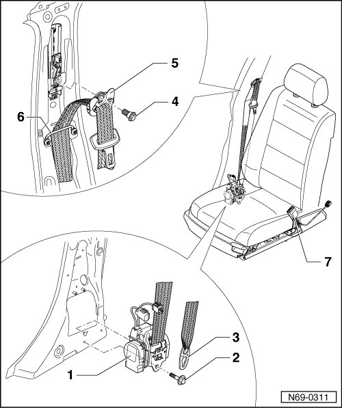

Front Seat Belts Assembly Overview
Front Seat Belts Assembly Overview

1 B-pillar belt retractor
2 Hex head bolt
• 50 Nm
3 Belt anchor
• Removing --> [ Belt Anchor ] Belt Anchor
4 Hex head bolt
• 50 Nm
5 Belt guide ring
6 Belt guide
7 Belt latch